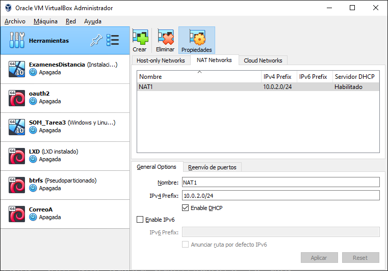
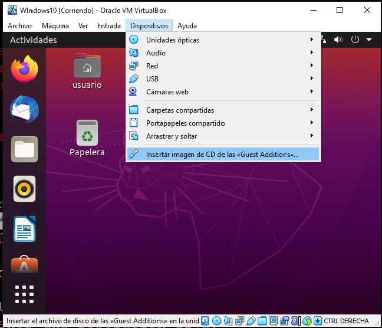
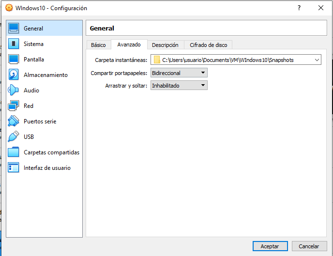
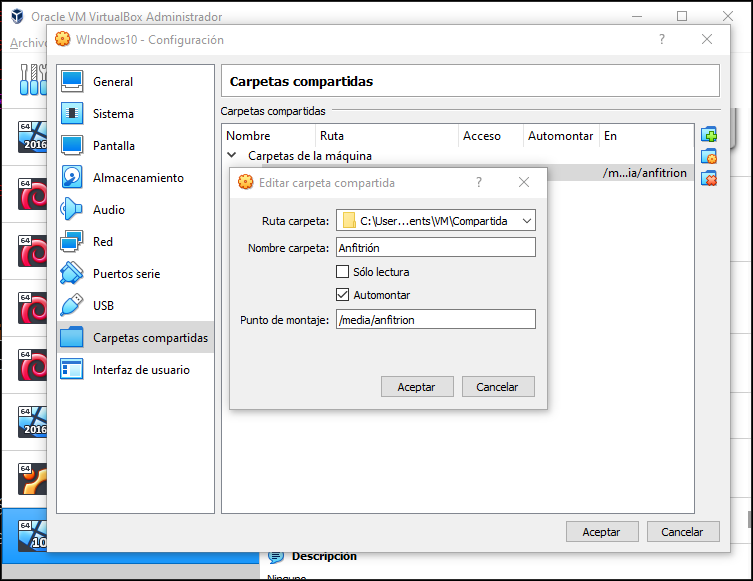
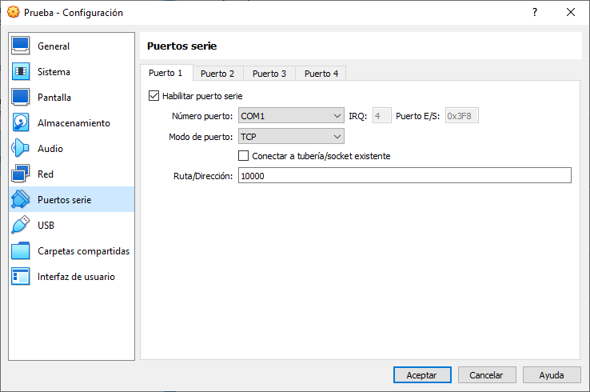

9.2.2.1.1. Virtualbox¶
Virtualbox es un hipervisor de tipo 2 con aceleración por hardware. Posee una versión liberada bajo licencia GPL, lo que posibilita que se encuentre disponible tanto en Windows como en los repositorios de cualquier distribución de Linux. Precisamente por esta disponibilidad, es la plataforma de virtualización que hemos elegido para el curso. Además, dispone de una interfaz gráfica bastante intuitiva.
El epígrafe no pretende ser una guía completa de su uso, sino una relación ligera de los aspectos que pueden resultar más confusos o insospechables.
9.2.2.1.1.1. Tipo de máquina¶
Al crear una nueva máquina virtual se puede escoger cuál es la plataforma (CPU + SO). La elección del sistema operativo es irrelevante y sólo sirve para que Virtualbox escoja el icono con el que identificará la máquina. En cambio, la CPU tiene importancia, ya que si escogemos una de 32 bits, se emulará ésta y, en consecuencia, sólo podremos instalar software para la plataforma x86.
9.2.2.1.1.2. Red¶
Virtualbox permite definir hasta cuatro interfaces de red para una misma máquina virtual. Dependiendo de nuestras intenciones, nos convendrá configurar cada una de ellas de una manera distinta. Hay varias posibilidades:
- Desconectada
La interfaz de red, existe, pero desconectada.
- Adaptador puente
La interfaz de red se encuentra en la misma red que la interfaz real a la que se asocia. Esto nos permite exponer la máquina en la red como si de una máquina real se tratara.
- NAT
La máquina virtual se sitúa en una red interna exclusiva que accede al exterior a través del propio software de Virtualbox, que hace de router SNAT y servidor DHCP y DNS. La máquina en esta red interna es, por tanto, inaccesible desde el exterior o desde otra máquina virtual, a menos que se redireccionen puertos. Esto último puede hacerse en la propia configuración avanzada de la interfaz de red.
- Red NAT
Parecida a la anterior, pero permite incluir varias máquinas virtuales dentro de una misma red interna, por lo que todas podrán comunicarse entre sí. Si se quiere utilizar esta posibilidad, hay que crear previamente la red NAT, mediante el gestor de red disponible en la sección de Herramientas:
- Red interna
Como la anterior, pero Virtualbox no hace ninguna labor de encaminamiento, por lo que la red está totalmente aislada del exterior. Podemos comunicarla con el exterior, de todos modos, creando una máquina con dos interfaces de red que haga la labor de router: una de las interfaces se coloca en la red interna y la otra en alguna de las modalidades que sí tiene acceso al exterior.
- Adaptador solo anfitrión
Crea una red constituida exclusivamente por el anfitrión y los huéspedes.
Controlador genérico.
Nota
Para virtualizar la tarjeta de red, es mejor escoger como modelo de hardware «virtio-net», que, en realidad, no virtualiza una tarjeta, sino que es una solución de paravirtualización. La ventaja de usarlo es el rendimiento (obvio tratándose de paravirtualización) y que es el único que permite arrancar por red si usamos como firmware UEFI. Ahora bien, si el sistema huésped es Windows, no dispondremos de los drivers durante la instalación y habrá que instalarlos a posteriori desde el proyecto KVM. El modo más fácil de instalación es usar la ISO proporcionada en este enlace.
9.2.2.1.1.3. Discos¶
Lo habitual es que los discos del sistema huésped sean archivos del sistema anfitrión. Virtualbox soporta varios formatos:
9.2.2.1.1.3.1. Tipos¶
Su formato nativo denominado VDI.
VMDK, que es el formato abierto propio de VMware.
VHD, que es el formato que creó Microsoft para su abandonado programa de virtualización Virtual PC.
RAW, que es, simplemente, un archivo que contiene byte a byte el contenido del disco virtual.
Nota
Virtualbox no soporta Qcow2, el formato nativo de QEmu, pero QEmu sí el de Virtualbox por lo que para hacer conversiones entre estos dos formatos podemos recurrir a la orden qemu-img.
Lo más adecuado es usar el formato VDI por ser el nativo, aunque los cuatro enunciados son suficientemente portables a otros sistemas de virtualización. Eso sí, al ser el último un formato crudo, su tamaño será siempre igual al del disco que virtualiza. mientras que los otros tres son capaces de ocupar en disco sólo el espacio que efectivamente ocupa su contenido[1].
Nota
Cambiar el formato de un disco (p.e. para usarlo en otro software de virtualización distinto) exige utilizar la utilidad vboxmanage de línea de comandos. Por ejemplo:
$ vboxmanage clonemedium original.vdi destino.vmdk --format VMDK
aunque si el original es el formato crudo debe usarse esta otra:
$ vboxmanage convertfromraw original.img destino.vdi --format VDI
9.2.2.1.1.3.2. Formato VDI¶
Al utilizar el formato nativo para discos, tendremos posilidad de usar algunas utiilidades muy interesantes:
Las instantáneas, que permiten guardar el estado de una máquina en un instante preciso, lo cual posibilita volver a él en el futuro.
Cambiar el tipo de disco, que en principio es «Normal». Uno muy útil es «Multiconexión», que permite utilizar un mismo disco como plantilla para varias máquinas distintas. Así, podemos instalar un un sistema operativo en un disco (o sea, en un archivo VDI) y una vez completada la instalación, liberar el disco y pasarlo a tipo «Multiconexión». Una vez sea de este tipo, para tener una máquina con el sistema recién instalado nos bastará con conectar el disco a una nueva máquina virtual y podremos usar simultáneamente el disco en todas las máquinas en las que lo desemos.
Tanto las instantáneas como los discos derivados de uno en multiconexión generan archivos VDI enlazados con el VDI del que proceden (la genealogía puede consultarse en la sección «Administrador de medios virtuales»). Cuando se quieren mezclar en un sólo archivo VDI varios niveles de archivos enlazados basta con:
$ vboxmanage clonemedium uuid-larguisimo-del-ultimo-nivel.vdi compacto.vdi --format VDI
9.2.2.1.1.4. Arranque¶
Por defecto, las máquinas virtuales llevan a cabo, un arranque BIOS. Es posible también virtualizar un arranque UEFI marcando en la sección de configuración relativa a la placa base, la opción correspondiente.
Advertencia
Marcar la opción EFI, tiene consecuencias adicionales: la secuencia de arranque definida en la interfaz gráfica de Virtualbox dejará de tener efecto y la secuencia vendrá definida en la propia virtualización del arranque EFI al que se puede acceder. pulsando la tecla F2 justamente tras el encendido de la máquina. Lo habitual es que el último sistema operativo instalado se autodefina como el sistema arrancado por defecto con lo que puede darse el caso de que tengamos que recurrir a la tecla para poder arrancar desde cedé.
9.2.2.1.1.5. Añadidos al huésped¶
La primera operación tras la instalación del sistema huésped, debe ser la instalación de las «Guest Additions» disponibles como imagen ISO a través de la entrada «Dispositivos» del menú superior de la aplicación.
Advertencia
Para que en un huésped Linux pueda llevarse a cabo la instalación correctamente es necesario que el sistema tenga instaladas previamente las cabeceras del núcleo y el paquete make:
# apt install linux-headers-`uname -r` make
También es necesario el compilador gcc. Dependiendo de la distribución que tengamos puede ser necesario añadirlo de forma explícita a la orden anterior.
En cualquier caso, si una vez instaladas, las adiciones parecen no funcionar, pruebe a intentar arrancar:
# /opt/VBoxGuestAdditions-*/init/vboxadd restart
y mire si se obtienen errores.
La instalación de estos añadidos tiene algunas ventajas:
El entorno gráfico huésped se ajustará automáticamente al espacio de la ventana de virtualbox, en vez de tener una resolución fija.
Si podrá copiar y pegar desde anfitrión a huésped y viceversa si en los ajustes de la máquina particular (
General>Advanced), se fija el portapapeles compartido como bidireccional.Se podrá compartir archivos fácilmente entre anfitrión y huésped con sólo definir carpetas compartidas.
aunque, dependiendo de su sistema operativo, tendremos que hacer alguna configuración más en el huésped:
Si es Windows, la carpeta aparecerá como una carpeta de red y basta con que esté habilitado el descubrimiento de estas carpetas para que la veamos sin más dificultades.
Si es Linux, la casuística es mayor:
En uno de escritorio con entorno gráfico, la carpeta se montará directamente, pero de modo que sólo los miembros del grupo vboxsf (que se crea al instalar estas adiciones) tendrás permisos de lectura y escritura en él. Por tanto, deberemos añadir al usuario sin privilegios a este grupo.
En un sistema más básico en el que no se monten automáticamente sistemas de archivos, deberá montarse el recurso compartido a mano:
# mkdir -p /media/anfitrion # mount.vboxsf -o gid=vboxsf,dmode=770,fmode=660 NombreCompartido /media/anfitrion
donde «NombreCompartido» será el nombre de carpeta que haya especificado en Virtualbox (en la captura Anfitrión) y las opciones proporcionadas emulan el comportamiento descrito para los sistemas en que se monta automáticamente la carpeta: sólo los usuarios del grupo vboxsf tienen acceso al recurso. Una alternativa al montaje manual es añadir una entrada en /etc/fstab para que se monte la carpeta al arrancar el sistema:
NombreCompartido /media/anfitrion vboxsf gid=vboxsf,dmode=770,fmode=660 0 2
9.2.2.1.1.6. Puerto serie¶
Es posible hacer disponible el puerto serie del anfitrión en el cliente, pero lo que nos interesa aquí es hacer accesible en el anfitrión el puerto serie del huéspued al cual se ha redireccionado la consola de texto como se explica en el caso análogo cuando se usa KVM.
Para que la salida sea accesible debe configurarse así:
Y ya podrá usarse en el anfitrión telnet o netcat para tener disponible una consola del huésped:
$ telnet localhost 10000
Nota
Virtualbox no crea un servidor telnet (como sí hace QEmu) por lo que el acceso es crudo y no usando el protocolo telnet. De hecho, esa es la razón por la que puede usarse netcat. Es importante tener esto presente por si la aplicación que se usa es Putty. En ese caso, al configurar el acceso con Putty deberemos escoger como tipo de servicio RAW, no Telnet.
9.2.2.1.1.7. Exportación¶
Para trasladar una máquina virtual de un sistema anfitrión a otro tenemos dos posibilidades:
Exportar la máquina a un archivo en formato OVA, que luego puede importarse fácilmente a otro lugar. Tiene el inconveniente de que no respeta las instantáneas que hayamos podido crear y sólo generará en la máquina de destino un VDI con el «estado actual» de la máquina virtual.
Copiar el directorio que contiene la máquina virtual en el sistema anfitrión de destino y «Añadir» una nueva máquina virtual utilizando el archivo
.vboxque define la máquina y está contenido en tal directorio. El problema de este método es que debemos comprobar si todo lo que necesitamos está contenido dentro. Por ejemplo, si utilizamos un disco en multiconexión, tal disco es muy probable que se encuentre fuera del directorio y habría que copiarlo también y, quizás, editar el archivo.vbox(es un XML) para modificar la ruta y que Virtualbox sea capaz de encontrarlo.
Notas al pie